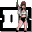

GTA IIIDetalles
 |
|
| Tiempo de juego | 2m 42s |
| Última actividad | 16/1/2026 12:03:01 |
| Añadido | 26/4/2025 1:40:24 |
| Modificado | 10/12/2025 11:26:57 |
| Estado de finalización | Jugado |
| Librería | Playnite |
| Fuente | |
| Plataforma | PC (Windows) |
| Fecha de lanzamiento | 22/10/2001 |
| Puntuación de la Comunidad | 85 |
| Puntuación de la Crítica | 95 |
| Puntuación de usuario | |
| Género | Adventure Racing Shooter Simulator |
| Desarrollador | DMA Design TransGaming Inc. |
| Editor | Rockstar Games Take-Two Interactive |
| Característica | Single Player |
| Enlaces | Wikipedia Steam 🌟Definitive Edition |
| Tag | Texto en Español |
Descripción
El Origen del Mundo Abierto en 3D
Fuiste traicionado, dado por muerto, y ahora estás solo en una ciudad que no duerme. Pero en esta jungla de cemento llena de vicios y oportunidades, tu caída es solo el comienzo de tu ascenso. Esta es tu chance de construir un imperio criminal desde cero, forjando tu camino a través del bajo mundo a punta de pistola y ruedas quemando asfalto.
La ciudad es Liberty City, una metrópolis gigante que se siente viva, con sus propios ritmos, sus secretos y sus peligros en cada esquina. Por primera vez, el mundo abierto de la acción se presenta en tres dimensiones con una escala que cambió para siempre los videojuegos. Podés ir a donde quieras, robar el vehículo que se te antoje y aceptar trabajos para las organizaciones criminales más pesadas, o simplemente causar el caos en las calles.
Más allá de la historia de venganza y poder, la experiencia es sumergirte en esa atmósfera urbana cruda, sintonizar sus icónicas estaciones de radio y sentir la libertad total de vivir una vida criminal virtual sin límites. Fue el juego que definió lo que significaría un mundo abierto en 3D y te dio la llave de una ciudad entera para que hicieras lo que quisieras. Si buscás el origen de la revolución sandbox con una historia de crimen inolvidable y la sensación de tener una ciudad a tus pies (para bien o para mal), este es el lugar donde empezó todo.